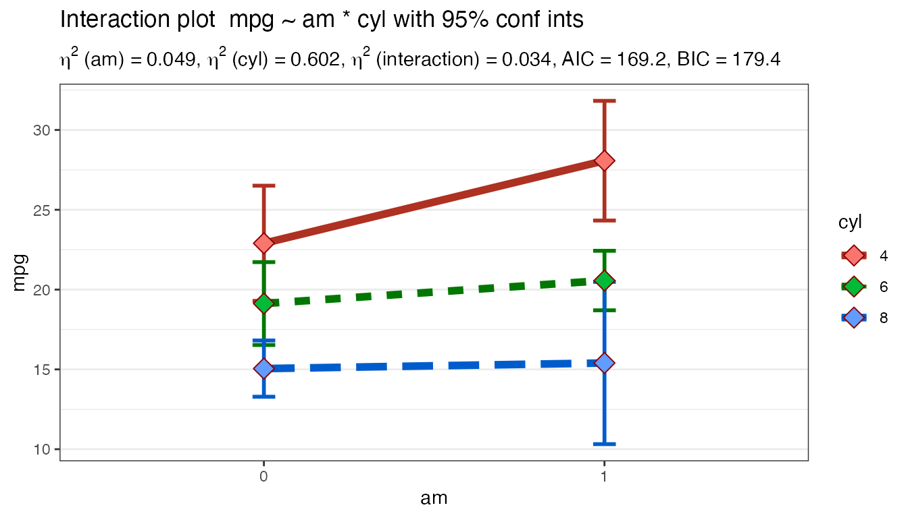

vignettes/Using-Plot2WayANOVA.Rmd
Using-Plot2WayANOVA.RmdThe CGPfunctions package includes functions that I find useful for teaching statistics especially to novices (as well as an opportunity to sharpen my own R skills). I only write functions when I have a real need – no theory – just help for actually practicing the art. They typically are not “new” methods but rather wrappers around either base R or other packages and are very task focused. This vignette covers two functions from the package that try and help users (especially students) do one thing well by pulling together pieces from a variety of places. They are as follows:
Plot2WayANOVA which as the name implies conducts a 2 way ANOVA and plots the results using ggplot2
neweta which is a helper function that appends the results of a Type II eta squared calculation onto a classic ANOVA tableThe ANOVA family of statistical techniques allow us to compare mean differences of one outcome (dependent) variable across two or more groups (levels) of one or more independent variables (factor). It is also true that ANOVA is a special case of the GLM or regression models so as the number of levels increase it might make more sense to try one of those approaches. The 2 Way ANOVA allows for comparisons of mean differences across 2 independent variables factors with a varying numbers of levels in each factor.
The Plot2WayANOVA function conducts a classic analysis of variance (ANOVA) using existing R functions and packages in a sane and defensible manner not necessarily in the one and only manner.
Imagine that you are interested in understanding whether a car’s fuel efficiency (mpg) varies based upon the type of transmission (automatic or manual) and the number of cylinders the engine has. Let’s imagine that the mtcars data set is actually a random sample of 32 cars from different manufacturers and use the mean mpg by am and cyl to help inform our thinking. While we expect variation across our sample we’re interested in whether the differences between the means by grouping of transmission type and cylinders is significantly different than what we would expect in random variation across the data.
In simplistic terms we want to know whether am matters, cyl matters or if it depends on the interaction of the two. It’s this interaction term that typically confuses novices or is difficult to “see”. That’s where a good interaction graph can hopefully play a key role, and that’s what the Plot2WayANOVA focuses on.
There’s no lack or tools or capabilities in base R or in the many packages to do this task. What this function tries to do is pull together the disparate pieces with a set of sane defaults and a simple interface to work with it. At its simplest you would require the library and then enter this command:
Plot2WayANOVA(mpg~am*cyl, mtcars) which lays our question out in R’s vernacular with a formula and a dataframe. Optionally we can specify a different confidence level and choose a line or a bar graph.
“Under the hood”, however there’s a lot of nice features at work.
# Install from CRAN
install.packages("CGPfunctions")
# Or the development version from GitHub
# install.packages("devtools")
devtools::install_github("ibecav/CGPfunctions")then load the library.
library(CGPfunctions)
#> Warning in checkMatrixPackageVersion(): Package version inconsistency detected.
#> TMB was built with Matrix version 1.2.15
#> Current Matrix version is 1.2.16
#> Please re-install 'TMB' from source using install.packages('TMB', type = 'source') or ask CRAN for a binary version of 'TMB' matching CRAN's 'Matrix' packageThe only two required parameters are a formula and a dataframe (like) object. If we run the function in its simplest form here’s what we get.
Plot2WayANOVA(mpg~am*cyl, mtcars)
#>
#> Converting am to a factor --- check your results
#>
#> Converting cyl to a factor --- check your results
#>
#> --- WARNING! ---
#> You have an unbalanced design. Using Type II sum of squares,
#> to calculate factor effect sizes eta and omega
#>
#> The R Squared reported is for the overall model but your
#> two factors account for ...
#> 0.684
#>
#> of the type II sum of squares, as opposed to the
#> R Squared reported below for overall model fit!
#> term sumsq meansq df statistic p.value etasq partial.etasq
#> 1 am 36.767 36.767 1 3.999 0.056 0.049 0.133
#> 2 cyl 456.401 228.200 2 24.819 0.000 0.602 0.656
#> 3 am:cyl 25.437 12.718 2 1.383 0.269 0.034 0.096
#> 4 Residuals 239.059 9.195 26 NA NA NA NA
#> omegasq partial.omegasq cohens.f power
#> 1 0.036 0.086 0.392 0.515
#> 2 0.571 0.598 1.382 1.000
#> 3 0.009 0.023 0.326 0.298
#> 4 NA NA NA NA
#>
#> Measures of overall model fit
#> # A tibble: 1 x 11
#> r.squared adj.r.squared sigma statistic p.value df logLik AIC BIC
#> <dbl> <dbl> <dbl> <dbl> <dbl> <int> <dbl> <dbl> <dbl>
#> 1 0.788 0.747 3.03 19.3 5.18e-8 6 -77.6 169. 179.
#> # … with 2 more variables: deviance <dbl>, df.residual <int>
#>
#> Table of group means
#> # A tibble: 6 x 9
#> # Groups: am [2]
#> am cyl TheMean TheSD TheSEM CIMuliplier LowerBound UpperBound N
#> <fct> <fct> <dbl> <dbl> <dbl> <dbl> <dbl> <dbl> <int>
#> 1 0 4 22.9 1.45 0.839 4.30 19.3 26.5 3
#> 2 0 6 19.1 1.63 0.816 3.18 16.5 21.7 4
#> 3 0 8 15.0 2.77 0.801 2.20 13.3 16.8 12
#> 4 1 4 28.1 4.48 1.59 2.36 24.3 31.8 8
#> 5 1 6 20.6 0.751 0.433 4.30 18.7 22.4 3
#> 6 1 8 15.4 0.566 0.4 12.7 10.3 20.5 2
#>
#> Testing Homogeneity of Variance with Brown-Forsythe
#> *** Possible violation of the assumption ***
#> Levene's Test for Homogeneity of Variance (center = median)
#> Df F value Pr(>F)
#> group 5 2.736 0.04086 *
#> 26
#> ---
#> Signif. codes: 0 '***' 0.001 '**' 0.01 '*' 0.05 '.' 0.1 ' ' 1
#>
#> Testing Normality Assumption with Shapiro-Wilk
#>
#> Shapiro-Wilk normality test
#>
#> data: MyAOV_residuals
#> W = 0.96277, p-value = 0.3263
#>
#> Interaction graph plotted...
Many thanks to Dani Navarro and the book > (Learning Statistics with R) whose etaSquared function was the genesis of neweta.
“He who gives up [code] safety for [code] speed deserves neither.” (via)